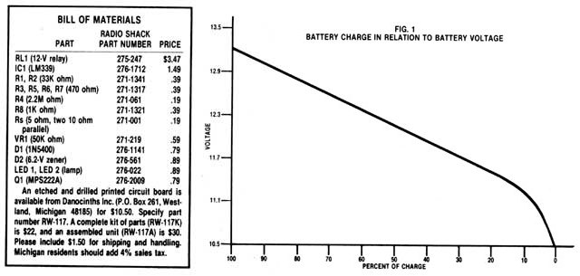
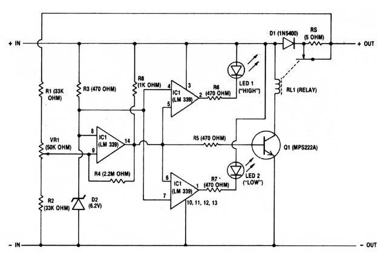
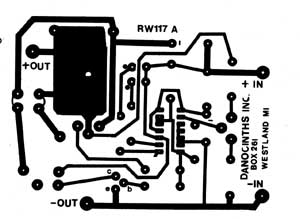
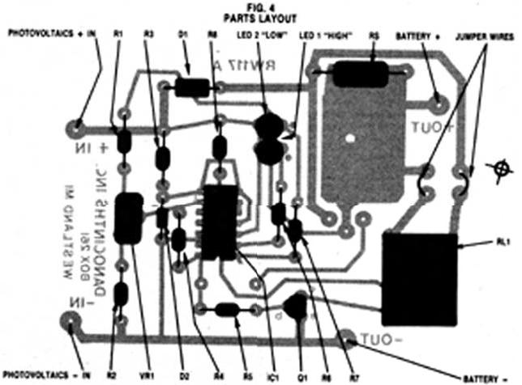
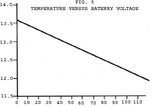

To have the most efficient, longest-lasting solar electric system, you can't get along without . . .
Photovoltaics, the process of making electricity from sunlight, is growing in popularity among alternative-energy enthusiasts . . . and for good reasons. In operation, PV panels are absolutely pollution-free (the same can't be said for their manufacture, of course) and require very little maintenance. What's more, solar cells are steadily dropping in price and are now competitive with other energy alternatives in many situations.
As is the case with so many of these independent power-generation systems, however, a photovoltaic setup requires some means of energy storage . . . and the most popular medium now is the lead-acid battery. During the day, when sunlight is plentiful, the electricity generated by the PV panel produces chemical changes in the battery cells. Then at night - and during other nonproductive hours - that chemical process can be reversed to retrieve the stored power from the battery.
But charging a lead-acid battery isn't a simple chore. These sensitive electrical instruments require specialized care: There must be a harmonious relationship between the photovoltaic generator and the storage battery if the system is to perform efficiently and provide the years of service that it's capable of.
BATTERY CHARGING
Sunlight, like wind, isn't a constant force. Fortunately, though, it's much more predictable than wind! Seasonal changes and weather notwithstanding, we receive about six hours of productive sunlight each day. Of those hours, the period between 10:00 AM and 2:00 PM offers peak solar radiation and the bulk of the photovoltaic-accessible energy.
Because charging occurs, at most, for only a quarter of the day, we should stuff as much power as possible into the cells during that period. On the other hand, we also must respect the requirements of the battery in order to insure that it gets fully charged and isn't damaged.
A dead lead-acid battery will accept a very heavy initial charge with little trouble . . . but only at first. As the battery progresses through its topping cycle and its chemical makeup changes, it takes on a completely different set of charging characteristics. When 70 to 80 % of the total capacity has been placed in the cells, the electricity being forced in will begin to decompose the water inside the battery . . . breaking it down into its elemental components of hydrogen and oxygen.
You may have noticed this effect without being aware of what was actually going on. The situation is often called "boiling", a misnomer that refers to the percolating appearance of the rising gas bubbles. The process is more properly called gassing. . . and if allowed to continue, it can permanently damage the cells. To prevent this from happening, current is normally reduced just as gassing begins. At the lower rate (often referred to as a trickle charge), the battery can be lifted to 100% capacity without danger.
THE CONTROLLER
Obviously, if we're to match our photovoltaic power cycle to the battery's charging pattern, we'll have to bring the cells to the point of gassing within the four-hour period between 10:00 AM and 2:00 PM. Then, through the remainder of the day, a trickle charge can be applied to lift the battery above 80% of of capacity. And a simple controller can decide when to reduce the current.
Fortunately, the battery itself gives an electrical cue when the gassing point is reached. There's a well-defined relationship between the state of the cells' charge and their voltage, as shown in Fig. 1. For a 12-volt battery, gassing begins at 12.6 volts . . . and that battery will be fully charged at 13.2 volts. [EDITOR'S NOTE: For a more detailed analysis of batteries and their characteristics, see "MOTHER's Guide to Storage Batteries", page 114, MOTHER NO. 74.]
The controller, then, contains an electronic comparator that monitors the battery's voltage and, in turn, manages a relay. When the voltage is low, the comparator leaves the relay in its normally closed position, allowing the full photovoltaic output to go to the battery . . . but once it reaches that 12.6-volt threshold, the relay snaps open and shunts the charge through a current-limiting resistor. This produces a trickle charge that's low enough to continue indefinitely without damaging the battery.
To prevent the battery from discharging through the PV panel at night, a diode is included in a series circuit in the positive lead. This one-way valve also prevents the controller from drawing power from the battery . . . so that all of the circuit's needs come from the photovoltaic generator.
CONSTRUCTION
Building your own charge controller is a relatively straightforward electronics project, based on a printed circuit board. In MOTHER NO. 84, page 136, I discussed the easy preparation of these convenient circuit paths. But if you prefer, you can order one readymade from Danocinths (the address is included in the bill of materials that accompanies this article).
Once you've prepared or purchased the circuit board, simply insert the components in their appropriate holes, as shown in Fig. 4, and solder them in place, using a low-wattage iron. Make absolutely sure that the integrated circuit and semiconductors are facing the right direction. It's easy to reverse them, and doing so will lead to their rapid demise.
To help you keep tabs on how the charging process is progressing, a monitor has been designed into the controller. Indicator lamps LED 1 and 2 show, respectively, when the circuit is at full current and at a trickle. (This feature isn't essential to the controller's operation, but it can be handy. If, however, you decide to eliminate it - by removing resistors R6 and 7 and lamps LED 1 and 2 - the device will still do its job.)
The completed circuit board should be put into a weatherproof enclosure of some kind. Radio Shack's part number 270-224 does the job nicely.
USING THE CONTROLLER
Only four connections have to be made to install the charge regulator in your photovoltaic system. Looking at Fig. 4, you can see that the negative lead is common to all the components, linking the negatives from the PV array and from the battery. The other two solder points connect to the positive legs of the system. One goes to the positive output on the generator, and the other - on the resistor side of the circuit - connects to the positive post of the battery.
After you've installed the controller, you must adjust the voltage sensor so that it will switch the relay at the proper time. An easy way to do this is to start with a somewhat discharged battery and turn VRl fully clockwise, so that the relay contacts are closed and full current is going to the lead-acid cells. As the battery recharges, monitor the voltage across its terminals with a voltmeter. When the level reaches 12.6 volts, turn VR1 counterclockwise just until the relay opens. This puts the system on trickle charge.
Or, if you don't have a voltmeter handy, you can simply watch the cells as they charge. When you notice the cells bubbling, adjust VR1 just until that relay opens. This process is a little tricky, though, because a small amount of bubbling will occur before the actual gassing point is reached. Be careful not to mistake this natural gassing for the vigorous, rolling "boil" you're really looking for.
Unfortunately, the charging voltage of a battery varies with its temperature. The colder the cells are, the higher the voltage that's required to produce the chemical changes. Ideally, a controller would adjust to this automatically, but - in order to keep this project relatively simple - our device doesn't have a temperature sensor built in. Consequently, you'll occasionally have to adjust the controller's activation point manually to compensate for temperature . . . in accord with the chart in Fig. 5.
This setting isn't very critical, though, since a certain amount of error can be tolerated by the lead-acid cells. As long as you keep the battery reasonably warm and sheltered (as you should anyway), small temperature changes won't force an adjustment.
The controller I've described here will easily handle a full five amps of power and can do the job of commercial units costing $100 or more! Amazingly enough, you can build it yourself in a few relaxing evening hours, for less than $20. And with the device in place, you'll be able to rest assured that the battery for your photovoltaic generator is receiving just the right amount of current for efficient charging.
Charge controllers for lead-acid batteries have been around for just about as long as the batteries themselves. For example, many people are probably familiar with the voltage regulators used in the electrical systems of cars. In fact, you might even be wondering why you need to build a special controller for your PV panels . . . when a replacement automotive regulator can readily be had for a few dollars.
Well, the answer is that PV panels and automobile generators or alternators are quite different . . . and, accordingly, the controllers appropriate to the two kinds of systems work on very different principles. The voltage regulator in your car manages the charging rate to the battery by controlling voltage (rather than current). It does this by altering the current flowing to the field windings of the generator. The field current then produces the magnetic field in the generator, and the output voltage of the unit is directly proportional to the strength of that field: The stronger the magnetic flux, the higher the voltage.
When the charging voltage begins to creep up above the limit imposed by the battery, the regulator reduces the current to the field winding. This lowers the output of the unit, and the battery and charge rate stay in step.
Photovoltaic cells, on the other hand, have no field winding in which to effect a change in charging current. Therefore, an automotive regulator would be less than useless with a PV panel. Furthermore, most wind generators use a setup quite similar to an automotive voltage regulator, so the photovoltaic controller we've described here is to be used exclusively with solar electric panels. It's the right tool for the right job!
|
 FIG. 2 CHEMATIC DIAGRAM |
 FIG.3 POSITIVE OF CIRCUIT BOARD |
 |
|
 |
 |
|